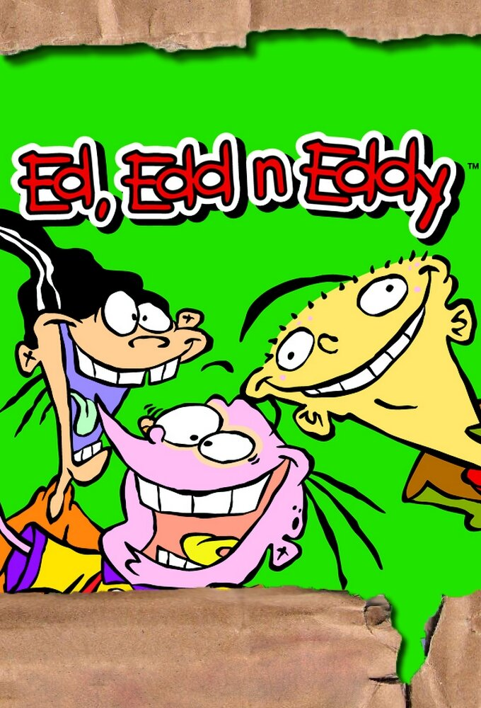

Ed, Edd n Eddy

Details
My notes
Ed, Edd n Eddy.
About the show
An animated comedy created by Danny Antonucci for Cartoon Network. It began in 1999 and follows three neighbourhood friends who share almost the same name.
What happens in it
Ed, Edd (often called Double D), and Eddy come up with elaborate schemes around their cul-de-sac. Their plans tend to unravel into slapstick trouble, usually involving the other neighbourhood children.
Memory status
Added by name. My viewing years, language, channel, and favourite episodes have not been recorded yet.